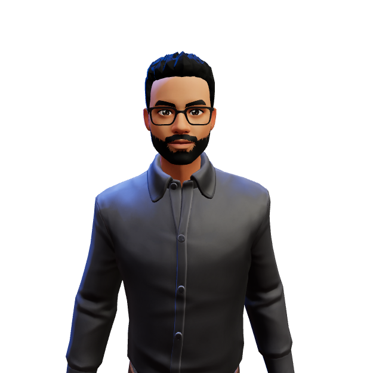

|
HI! I'M ATHUL I AM AN AUTOMATION TEST ENGINEER Over the last 3 Years I've had the pleasure of working with some great team,
|

|
I am an Automation Test Engineer who perfromed the automation test activities for UI,API and Batch by making use of selenium,Groovy.
Worked in a Project which implemented DevOps and used script Quality assurance methods like Jenkins,SonarQube
Got Opportunity to collaborate with Backend developers, Frond-end developers, Bussiness Analysts and UX designers to test new features in an Agile environment.
Participated in Code Reviews and Ensured Coding standards are followed
Bsc.Computer.Science -- St Albert's College Autonomous, Ernakulam -- 2016-2019
Computer Science -- Our Lady of Mercy Higher Secondary School, Allapuzha -- 2014-2016
Our Lady of Mercy School, Allapuzha -- 2016
Networking and Storage -- National Skills Development Corporation -- 2018
Process: Agile Way of Working -- TCS -- 2019